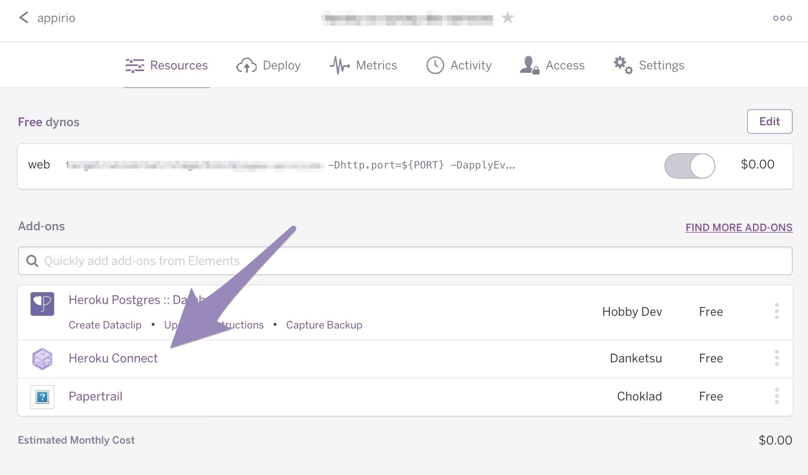
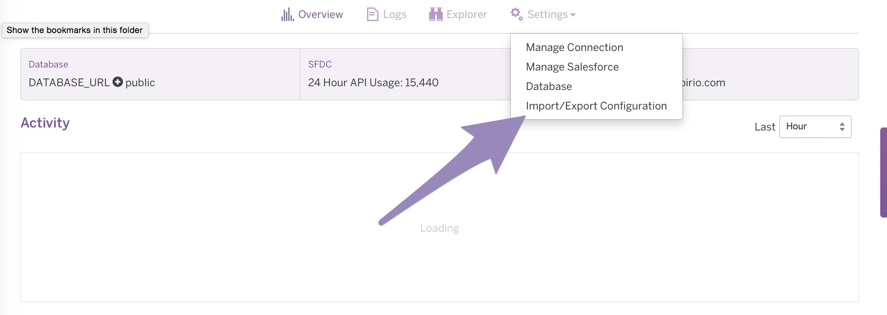
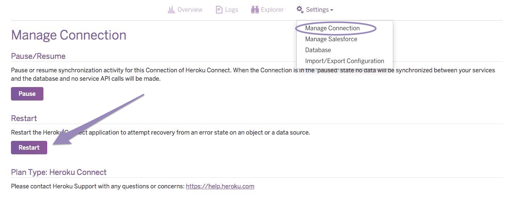

-
Deploy to Heroku using the Heroku 1-button deployment:

For Salesforce and Heroku deployments you will need Admin access to both systems.
Heroku will ask for the name of the app. Name it Mobile-Survey.
After deployment completes, you will be given the option to view your deployed site. Select this link to launch the site. It may take a few minutes to load the first time. SAVE this URL to your new site. You will come back to it after completing the Walkthrough where we will build surveys in Salesforce and setup users to access them.
-
Deploy unmanaged package to your SFDC sandbox.
-
Configure Heroku Connect using the HC setup instructions to connect to your SFDC org and Postgres DB. Be sure to follow steps 1-4 and specify the schema as documented in these steps.
*** IMPORTANT *** the first step of the Heroku Connect setup process will ask you for a schema name (and will default the name to ‘salesforce’). You MUST specify "public" as the schema name or the app will not work.
-
Import Configuration JSON file with SFDC object mappings
In your Mobile-Survey Heroku app:
-
Select Heroku Connect from the dashboard
 -
Then select Settings->Import/Export Configuration and import the configuration file.
Update your Heroku configuration variables to use your Postgres database.
-
-
Restart Heroku Connect:
- Settings->Manage Connection:
-
Restart

-
Update Configuration variables for Postgres DB
- From your Heroku Dashboard - click into your postgres DB to view the Connection Settings
- In another tab, go to your Heroku Dashboard and select Settings
- format for CC_DB_URL value: jdbc:postgresql://Host:Port/Database?ssl=true&sslfactory=org.postgresql.ssl.NonValidatingFactory
- example CC_DB_URL value: jdbc:postgresql://ec2-54-163-228-0.compute-1.amazonaws.com:5432/d8vq61oi2hlfbd?ssl=true&sslfactory=org.postgresql.ssl.NonValidatingFactory
- Select the “Save” button to save your new configuration parameters.
{kind=link}
{kind=link}
{kind=link}
- click the "Reveal Config Vars" button
- click the "Edit" button
- change the following 3 config variables to match your DB settings:
- CC_DB_PW
- CC_DB_URL
- CC_DB_USER
***IMPORTANT*** - the CC_DB_URL must follow this format exactly - you need to populate 3 values - Host, Port, and Database. Make sure that you have NO SPACES.